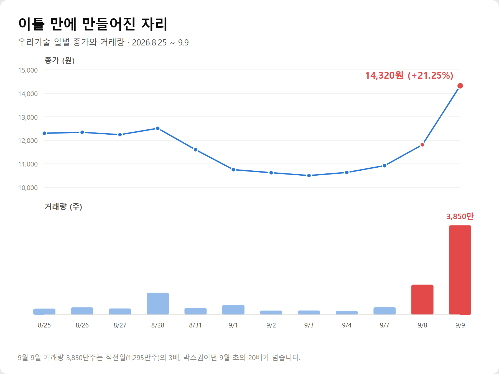
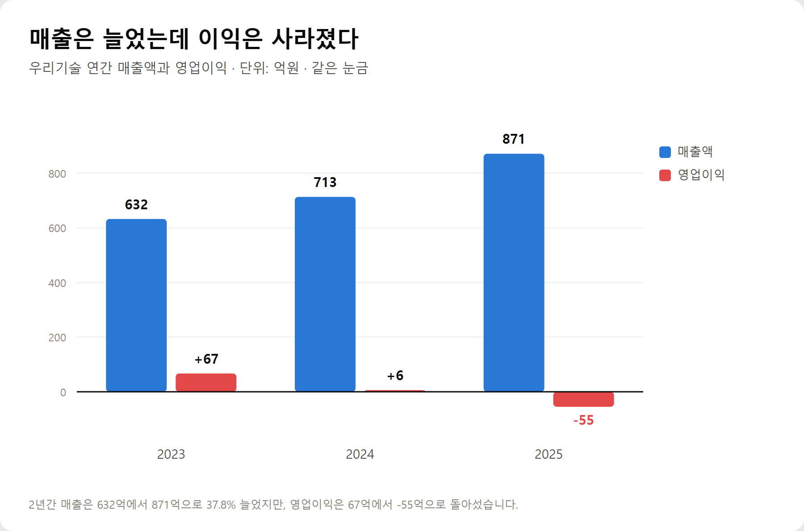
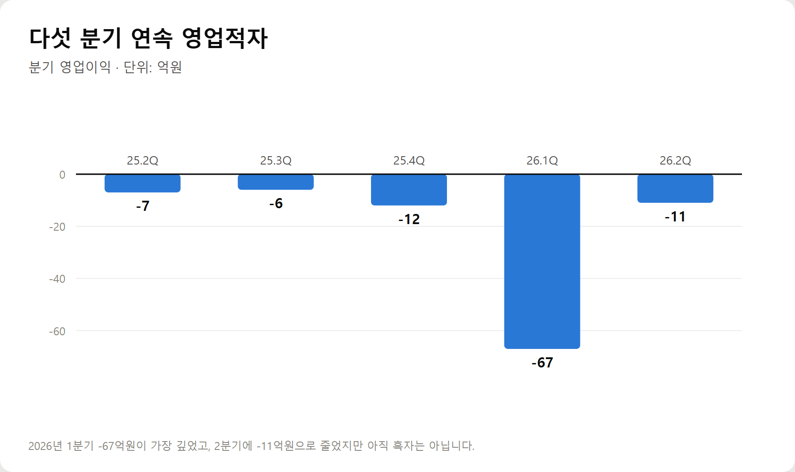
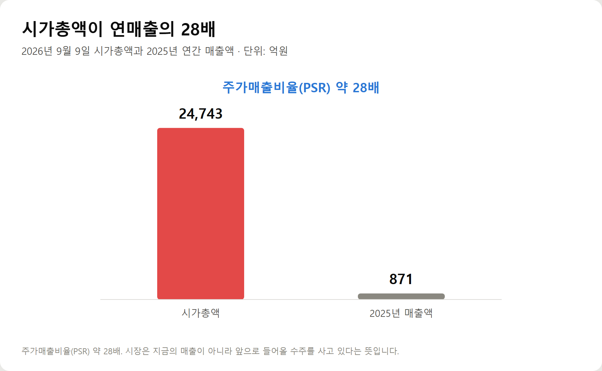

<meta charset="utf-8">
<title>우리기술 +21.25% — 원전 8기 기대, PSR 28배 — 나의 투자 그리고 행복한 여행</title>
<meta name="description" content="우리기술(032820)이 2026년 9월 9일 21.25% 급등해 14,320원에 마감했습니다. 한미 원전 8기 협상과 1,200억 달러, 그리고 다섯 분기 연속 영업적자와 PSR 28배를 재무제표로 분석했습니다.">
<meta name="viewport" content="width=device-width, initial-scale=1">
<link rel="canonical" href="https://danielmoon82.github.io/moon/posts/woori-tech-2026-09-09.html">
<link rel="preconnect" href="https://fonts.googleapis.com">
<link rel="preconnect" href="https://fonts.gstatic.com" crossorigin>
<link rel="stylesheet" href="https://fonts.googleapis.com/css2?family=Hahmlet:wght@400;600;800&family=IBM+Plex+Mono:wght@400;500&family=IBM+Plex+Sans+KR:wght@300;400;500;600&display=swap">

<style>
  :root{
    --paper:#F2EEE6;--surface:#FAF8F3;--surface-2:#E7E1D5;
    --ink:#191510;--ink-2:#4A4235;--ink-3:#7D7364;
    --line:#D6CEBF;--line-soft:#E4DDD0;--accent:#B06A15;--accent-bright:#C2761A;
    --up:#E5484D;--down:#3B82F6;
    --f-display:"Hahmlet",'Nanum Myeongjo',"Apple SD Gothic Neo",serif;
    --f-body:"IBM Plex Sans KR","Apple SD Gothic Neo","Malgun Gothic",sans-serif;
    --f-mono:"IBM Plex Mono","SFMono-Regular",Consolas,monospace;
    --pad:clamp(20px,5vw,64px);
  }
  @media (prefers-color-scheme:dark){
    :root:not([data-theme="light"]){
      --paper:#0B1120;--surface:#121A2C;--surface-2:#1A2439;
      --ink:#E9EEF7;--ink-2:#A9B5C9;--ink-3:#72809A;
      --line:#26314A;--line-soft:#1D2739;--accent:#E8A33D;--accent-bright:#F0B45C;
    }
  }
  *{box-sizing:border-box;}
  body{margin:0;background:var(--paper);color:var(--ink);font-family:var(--f-body);
    font-weight:300;font-size:1rem;line-height:1.75;-webkit-font-smoothing:antialiased;}
  a{color:inherit;}
  img{max-width:100%;height:auto;}
  .wrap{max-width:760px;margin:0 auto;padding-inline:var(--pad);}
  .nav{position:sticky;top:0;z-index:20;background:color-mix(in srgb,var(--paper) 88%,transparent);
    backdrop-filter:saturate(180%) blur(12px);border-bottom:1px solid var(--line);}
  .nav-in{display:flex;align-items:center;justify-content:space-between;height:58px;}
  .brand{font-family:var(--f-display);font-weight:600;font-size:1rem;letter-spacing:-.02em;text-decoration:none;}
  .back{font-family:var(--f-mono);font-size:.72rem;color:var(--ink-3);text-decoration:none;}
  .article{padding-block:clamp(40px,7vw,72px) clamp(56px,9vw,96px);}
  .eyebrow{font-family:var(--f-mono);font-size:.68rem;letter-spacing:.16em;text-transform:uppercase;
    color:var(--accent);margin:0 0 14px;}
  h1{font-family:var(--f-display);font-weight:800;font-size:clamp(1.6rem,4.4vw,2.3rem);
    line-height:1.3;letter-spacing:-.03em;margin:0 0 16px;}
  .byline{font-family:var(--f-mono);font-size:.72rem;color:var(--ink-3);
    padding-bottom:24px;border-bottom:1px solid var(--line);margin-bottom:32px;}
  h2{font-family:var(--f-display);font-weight:600;font-size:1.25rem;letter-spacing:-.02em;margin:42px 0 14px;}
  h3{font-family:var(--f-display);font-weight:600;font-size:1.05rem;letter-spacing:-.02em;
    margin:30px 0 10px;padding-top:14px;border-top:1px solid var(--line-soft);}
  h3 .code{font-family:var(--f-mono);font-size:.7rem;font-weight:400;color:var(--ink-3);margin-left:6px;}
  p{margin:0 0 18px;color:var(--ink-2);}
  ul.checks{margin:0 0 18px;padding-left:20px;color:var(--ink-2);}
  ul.checks li{margin-bottom:8px;font-size:.94rem;}
  table{width:100%;border-collapse:collapse;font-size:.88rem;margin-bottom:8px;}
  th{font-family:var(--f-mono);font-size:.66rem;letter-spacing:.06em;text-transform:uppercase;
    color:var(--ink-3);text-align:right;padding:8px 6px;border-bottom:1px solid var(--line);}
  th:first-child{text-align:left;}
  td{padding:10px 6px;border-bottom:1px solid var(--line-soft);color:var(--ink-2);}
  td.num{font-family:var(--f-mono);text-align:right;font-variant-numeric:tabular-nums;}
  td.up{color:var(--up);} td.down{color:var(--down);}
  .scroll{overflow-x:auto;}
  figure{margin:22px 0;}
  figure img{display:block;border-radius:3px;background:var(--surface-2);}
  figcaption{margin-top:8px;font-family:var(--f-mono);font-size:.68rem;color:var(--ink-3);text-align:center;}
  .note{margin-top:34px;padding:16px 18px;border-left:3px solid var(--accent);
    background:var(--surface);border-radius:0 3px 3px 0;}
  .note p{margin:0;font-size:.85rem;color:var(--ink-3);}
  .foot{border-top:1px solid var(--line);background:var(--surface);padding-block:30px 38px;}
  .foot p{margin:0;font-size:.8rem;color:var(--ink-3);}
</style>

<nav class="nav">
  <div class="wrap nav-in">
    <a class="brand" href="../index.html">나의 투자 그리고 행복한 여행</a>
    <a class="back" href="../index.html#stocks">← 시황으로</a>
  </div>
</nav>

<main class="wrap article">
  <p class="eyebrow">Market</p>
  <h1>우리기술 2026-09-09 +21.25% — 원전 8기 협상과 PSR 28배</h1>
  <p class="byline">투자 · 2026-09-09 기준</p>

  <p>한 줄 요약: 한미가 미국 원전 최대 8기(1,200억 달러) 건설을 협의 중이라는 소식에 우리기술이 이틀간 31% 올랐습니다. 다만 회사는 다섯 분기 연속 영업적자입니다.</p>
  <p>9월 9일 종가 14,320원(+21.25%), 거래량 3,850만주, 시가총액 2조 4,743억원. 2025년 매출 871억원 기준 PSR 약 28배, BPS 1,102원 기준 PBR 약 13배입니다.</p>
  <p>이 글은 2026년 9월 9일 장 마감 기준 재무·시세 데이터와 9월 8~9일 보도만으로 정리한 기록입니다.</p>
  <h2>1. 이틀 동안 무슨 일이 있었나</h2>
  <p>우리기술(032820)은 9월 9일 전 거래일보다 2,510원(21.25%) 오른 14,320원에 마감했습니다. 장중 고가는 14,550원, 저가는 11,950원이었습니다.</p>
  <p>하루 전인 9월 8일에도 890원(8.15%) 올라 11,810원에 마감했습니다. 이틀 합치면 10,920원에서 14,320원, 31.1% 상승입니다.</p>
  <figure><figcaption>우리기술 일별 종가와 거래량 (2026.8.25~9.9)</figcaption></figure>
  <p>눈여겨볼 것은 거래량입니다. 9월 4일 160만주였던 거래량이 9월 8일 1,295만주, 9월 9일 3,850만주로 늘었습니다.</p>
  <p>8월 25일부터 9월 7일까지 이 종목은 10,500원에서 12,510원 사이의 좁은 구간에 갇혀 있었습니다. 이틀 만에 그 구간을 완전히 벗어난 것입니다.</p>
  <p>같은 날 두산에너빌리티는 2.46%, 한화오션은 2.32% 올랐습니다. 대형주보다 중소형 원전주가 훨씬 크게 움직였습니다.</p>
  <h2>2. 재료의 정체 — 미국 원전 8기와 1,200억 달러</h2>
  <p>이번 상승의 재료는 한 가지입니다.</p>
  <p>한미 양국이 합의한 3,500억 달러(약 469조원) 규모 대미 투자의 후속 사업으로, 미국에 대형 원전 최대 8기를 건설하는 방안을 협의하고 있다는 소식입니다.</p>
  <div class="note"><p>미국 측은 조선 분야를 제외한 2,000억 달러 규모의 투자 가운데 1,200억 달러(약 161조원)를 원전 건설에 투입하는 방안을 제안한 것으로 알려졌습니다.</p></div>
  <p>한국 측은 이 가운데 최소 2기에 한국형 원전인 APR1400을 적용하는 방안을 요구하는 것으로 전해졌습니다.</p>
  <p>산업통상부는 9월 7일 국회에서 열린 비공개 당정 협의에서 이런 내용을 보고했습니다. 대미 투자의 첫 사업으로는 미국 텍사스주 엔시날 가스복합화력발전소 건설이 유력하게 검토되고 있습니다.</p>
  <p>여기에 대미투자펀드 2,000억 달러 가운데 60%가량이 미국 대형 원전 건설에 쓰일 것이라는 전망까지 나오면서 기대가 커졌습니다.</p>
  <p>한국은 우라늄 채굴·농축을 제외하면 원전의 설계·건설·운영·관리 밸류체인 전체에 기업을 갖고 있습니다. 그래서 사업이 현실화되면 수혜가 넓게 퍼질 수 있다는 계산이 깔려 있습니다.</p>
  <h2>3. 다만 아직 확정된 것은 없다</h2>
  <p>여기서 한 번 멈춰야 합니다.</p>
  <p>정부는 한미 간 협상이 진행 중이며 구체적인 내용은 확정되지 않았다는 입장입니다. 8기를 다 짓는다는 전제도, 한국 기업이 얼마를 가져간다는 전제도 아직 없습니다.</p>
  <p>노형에 따라 수혜 기업도 갈립니다. JP모건은 웨스팅하우스의 AP1000이 주로 채택되면 현대건설과 두산에너빌리티가, 한국형 APR1400 위주로 가면 설계를 맡는 한전기술이 가장 큰 혜택을 볼 것으로 봤습니다.</p>
  <div class="note"><p>즉 지금 오른 것은 '수주'가 아니라 '수주 가능성'입니다. 그리고 그 가능성이 개별 기업의 매출로 얼마나 내려올지는 아직 아무도 계산할 수 없습니다.</p></div>
  <h2>4. 재무제표 — 매출은 늘었는데 이익이 사라졌다</h2>
  <p>이제 회사 자체를 봅니다.</p>
  <figure><figcaption>우리기술 연간 매출액과 영업이익 (단위: 억원)</figcaption></figure>
  <ul class="checks">
    <li>2023년 매출 632억원 · 영업이익 +67억원 (영업이익률 10.57%)</li>
    <li>2024년 매출 713억원 · 영업이익 +6억원 (영업이익률 0.78%)</li>
    <li>2025년 매출 871억원 · 영업이익 -55억원 (영업이익률 -6.30%)</li>
  </ul>
  <p>2년 사이 매출은 632억원에서 871억원으로 37.8% 늘었습니다. 회사가 일을 더 많이 하고 있다는 뜻입니다.</p>
  <p>그런데 영업이익은 67억원에서 -55억원으로 돌아섰습니다. 영업이익률은 10.57%에서 -6.30%로 떨어졌습니다.</p>
  <p>매출이 느는데 이익이 줄어드는 것은 대개 두 가지 중 하나입니다. 원가가 오르거나, 수익성이 낮은 일을 더 많이 받거나.</p>
  <p>어느 쪽이든 지금 이 회사는 규모를 키우면서 마진을 잃고 있습니다.</p>
  <h2>5. 다섯 분기 연속 적자</h2>
  <p>분기로 쪼개면 더 분명해집니다.</p>
  <figure><figcaption>우리기술 분기 영업이익 (단위: 억원)</figcaption></figure>
  <ul class="checks">
    <li>2025년 2분기 -7억원</li>
    <li>2025년 3분기 -6억원</li>
    <li>2025년 4분기 -12억원</li>
    <li>2026년 1분기 -67억원</li>
    <li>2026년 2분기 -11억원</li>
  </ul>
  <p>다섯 분기 연속 영업적자입니다. 2026년 1분기 -67억원이 가장 깊었고, 2분기에 -11억원으로 줄었지만 아직 흑자로 올라서지는 못했습니다.</p>
  <p>한 가지 헷갈릴 수 있는 지점이 있습니다. 당기순이익은 들쭉날쭉합니다. 2026년 1분기 +274억원, 2분기 +201억원으로 오히려 큰 흑자입니다.</p>
  <p>영업에서는 적자인데 순이익이 흑자라는 것은, 본업이 아닌 곳에서 이익이 났다는 뜻입니다. 지분법이익이나 자산 평가이익 같은 항목입니다.</p>
  <div class="note"><p>순이익 흑자를 '회사가 돈을 벌고 있다'로 읽으면 안 됩니다. 본업의 성적표는 영업이익이고, 그쪽은 다섯 분기째 마이너스입니다.</p></div>
  <h2>6. 지금 주가는 무엇을 반영하고 있나</h2>
  <p>9월 9일 기준 우리기술의 시가총액은 2조 4,743억원입니다.</p>
  <figure><figcaption>시가총액과 2025년 연간 매출액 비교 (단위: 억원)</figcaption></figure>
  <p>2025년 매출 871억원과 비교하면 주가매출비율(PSR)이 약 28배입니다. 회사가 1년 동안 버는 매출의 28배를 시장이 지불하고 있다는 뜻입니다.</p>
  <p>자산으로 봐도 비슷합니다. 2026년 2분기 말 주당순자산(BPS)은 1,102원입니다. 주가 14,320원을 대입하면 PBR은 약 13배입니다.</p>
  <p>참고로 2023년 이 회사의 PBR은 1.91배였습니다. 2년 사이 장부가 대비 가격이 여섯 배 이상 비싸진 것입니다.</p>
  <p>영업적자 상태라 PER은 의미가 없습니다. 이익이 없으면 이익 대비 배수도 계산되지 않습니다.</p>
  <p>정리하면 이렇습니다. 지금 이 주가는 현재의 실적이 아니라 앞으로 들어올지 모르는 수주를 미리 사고 있는 가격입니다.</p>
  <h2>7. 재무 건전성 — 버틸 체력은 어떤가</h2>
  <p>적자가 이어지는 회사에서는 버티는 힘을 봐야 합니다.</p>
  <ul class="checks">
    <li>부채비율 — 2023년 83.89% → 2025년 172.08% → 2026년 2분기 123.87%</li>
    <li>당좌비율 — 2023년 101.31% → 2025년 62.77% → 2026년 2분기 82.75%</li>
    <li>유보율 — 2023년 20.15% → 2026년 2분기 108.78%</li>
  </ul>
  <p>부채비율은 2025년 172.08%까지 올랐다가 2026년 2분기 123.87%로 내려왔습니다. 당좌비율도 62.77%에서 82.75%로 회복됐습니다.</p>
  <p>유보율이 20.15%에서 108.78%로 크게 오른 것은 자본이 늘었다는 뜻입니다. 순이익 흑자와 같은 방향입니다.</p>
  <p>즉 재무 지표만 보면 1년 전보다 나아졌습니다. 다만 당좌비율 82.75%는 여전히 100% 아래입니다. 1년 안에 갚을 돈보다 바로 현금화할 자산이 적다는 의미입니다.</p>
  <h2>8. 글로벌 상황을 어떻게 읽어야 하나</h2>
  <p>원전 테마를 밀어 올리는 힘은 한미 협상 하나만이 아닙니다.</p>
  <p>인공지능 데이터센터가 늘면서 전력 수요가 구조적으로 커지고 있습니다. 미국이 원전을 다시 짓겠다고 나선 배경에도 이 수요가 있습니다.</p>
  <p>한국은 문재인 정부의 탈원전 정책으로 위축됐던 산업이 다시 일감을 받을 수 있다는 기대를 갖고 있습니다. 언론에서 '원전 르네상스'라는 표현이 나오는 이유입니다.</p>
  <p>동시에 신중론도 함께 나옵니다. 기대가 실제 기업 실적으로 이어질지는 더 지켜봐야 한다는 지적입니다.</p>
  <p>원전은 착공에서 준공까지 10년 안팎이 걸리는 사업입니다. 협상이 타결되더라도 매출로 잡히기까지는 시간이 걸립니다.</p>
  <p>그 시간 동안 주가는 기대만으로 버텨야 합니다.</p>
  <h2>9. 앞으로의 시나리오</h2>
  <p>확인된 사실만으로 세 갈래를 그려볼 수 있습니다.</p>
  <p>첫째, 협상이 타결되고 한국형 APR1400이 채택되는 경우입니다.</p>
  <p>설계·기자재·계측제어까지 밸류체인 전반에 일감이 돌아갑니다. 이 경우 지금의 PSR 28배는 시간이 지나며 매출이 따라붙어 정당화될 여지가 생깁니다.</p>
  <p>둘째, 협상은 타결되지만 미국 노형(AP1000) 중심으로 가는 경우입니다.</p>
  <p>JP모건 분석대로라면 현대건설·두산에너빌리티 쪽으로 수혜가 쏠립니다. 중소형 협력사까지 온기가 내려오는 데는 시간이 더 걸리고, 기대가 컸던 종목일수록 조정 폭이 큽니다.</p>
  <p>셋째, 협상이 지연되거나 규모가 줄어드는 경우입니다.</p>
  <p>정부가 아직 확정된 것이 없다고 밝힌 만큼 가능성이 열려 있습니다. 이때는 이틀간의 상승분이 되돌려질 수 있습니다.</p>
  <h2>10. 지금 사도 될까</h2>
  <p>제 판단을 정리하면 이렇습니다. 이틀 동안 31% 오른 자리에서 추격매수는 매력도가 낮습니다.</p>
  <p>첫째, 재료가 확정된 사실이 아니라 협상 중인 사안입니다. 정부도 확정되지 않았다고 했습니다.</p>
  <p>둘째, 회사는 다섯 분기 연속 영업적자입니다. 재료가 실현되기 전까지 실적이 주가를 받쳐줄 여력이 없습니다.</p>
  <p>셋째, PSR 28배·PBR 13배는 기대가 이미 상당히 반영된 가격입니다. 좋은 소식이 나와도 추가로 올릴 여지가 그만큼 줄어듭니다.</p>
  <p>반대로 이 종목을 계속 볼 이유도 있습니다. 매출이 2년 연속 늘고 있고, 부채비율과 당좌비율이 1년 전보다 개선됐습니다. 원전 밸류체인 안에 실제로 자리를 갖고 있는 회사이기도 합니다.</p>
  <div class="note"><p>지금은 '사야 하는 자리'가 아니라 '협상 결과와 분기 실적을 확인해야 하는 자리'입니다.</p></div>
  <h2>11. 앞으로 확인할 세 가지</h2>
  <p>첫째, 한미 협상의 공식 발표입니다. 8기인지 그보다 적은지, 노형이 APR1400인지 AP1000인지가 수혜의 방향을 가릅니다.</p>
  <p>둘째, 우리기술의 영업이익 흑자 전환 여부입니다. 2026년 2분기 -11억원까지 좁혀졌습니다. 3분기에 흑자로 올라서면 이야기가 달라집니다.</p>
  <p>셋째, 실제 수주 공시입니다. 테마는 공시로 확인될 때 비로소 실적이 됩니다. 공시 없이 주가만 오르는 구간이 길어지면 위험이 커집니다.</p>
  <p>여기에 하나 덧붙이면 거래량입니다. 3,850만주는 평소의 20배가 넘는 수준입니다. 이런 거래량은 빠르게 올리기도 하지만 빠지는 속도도 그만큼 빠릅니다.</p>
  <h2>자주 묻는 질문</h2>
  <p>Q. 우리기술이 왜 갑자기 올랐나요?</p>
  <p>한미가 미국에 대형 원전 최대 8기를 건설하는 방안을 협의하고 있다는 소식 때문입니다. 미국 측이 1,200억 달러(약 161조원)를 원전에 투입하자고 제안했다고 알려지면서 원전 밸류체인 전반에 매수세가 몰렸습니다.</p>
  <p>Q. 원전 8기가 확정된 건가요?</p>
  <p>아닙니다. 정부는 협상이 진행 중이며 구체적인 내용은 확정되지 않았다는 입장입니다. 규모와 노형 모두 아직 정해지지 않았습니다.</p>
  <p>Q. 회사 실적은 어떤가요?</p>
  <p>2025년 매출 871억원, 영업이익 -55억원입니다. 매출은 2년간 37.8% 늘었지만 영업이익은 적자로 돌아섰고, 다섯 분기 연속 영업적자입니다.</p>
  <p>Q. 순이익은 흑자던데요?</p>
  <p>2026년 1분기 274억원, 2분기 201억원으로 순이익은 흑자입니다. 다만 영업이익은 같은 기간 각각 -67억원, -11억원입니다. 본업이 아닌 영업외 항목에서 이익이 났다는 뜻이라, 본업의 수익성과는 구분해서 봐야 합니다.</p>
  <p>Q. 지금 주가는 비싼가요?</p>
  <p>시가총액 2조 4,743억원은 2025년 매출 871억원의 약 28배입니다. BPS 1,102원 대비 PBR은 약 13배입니다. 2023년 PBR이 1.91배였던 것과 비교하면 기대가 많이 반영된 수준입니다.</p>
  <p>Q. 어떤 지표를 보고 판단해야 하나요?</p>
  <p>한미 협상의 공식 발표 내용, 영업이익 흑자 전환 여부, 그리고 실제 수주 공시 세 가지입니다. 테마는 공시로 확인될 때 실적이 됩니다.</p>
  <h2>정리하면</h2>
  <p>우리기술은 9월 9일 21.25% 올라 14,320원에 마감했습니다. 이틀간 31.1% 상승했고 거래량은 평소의 20배가 넘었습니다.</p>
  <p>올린 힘은 한미가 협의 중인 미국 원전 최대 8기, 그리고 1,200억 달러라는 숫자입니다.</p>
  <p>그런데 회사는 2025년 영업이익 -55억원, 다섯 분기 연속 영업적자입니다. 시가총액은 연매출의 28배, 장부가의 13배입니다.</p>
  <p>매출이 늘고 재무 지표가 나아지는 것은 사실입니다. 하지만 지금 가격은 그 개선이 아니라, 아직 확정되지 않은 협상 결과를 미리 반영한 값입니다.</p>
  <p>그래서 확인할 것은 결국 세 가지입니다. 협상이 발표되는가, 영업이익이 흑자로 돌아서는가, 수주가 공시되는가.</p>
  <p>테마는 기대로 오르고 실적으로 남습니다. 지금은 아직 기대의 구간입니다.</p>
  <div class="note"><p>이 글은 공개된 재무 데이터와 보도를 정리한 것으로 특정 종목의 매수·매도를 권유하지 않습니다. 투자 판단과 그에 따른 손실의 책임은 투자자 본인에게 있습니다.</p></div>
  <p>※ 주가·거래량·재무 수치는 2026년 9월 9일 장 마감 기준 네이버금융 공시 자료입니다. 한미 원전 협상 관련 내용은 2026년 9월 8~9일 보도를 근거로 했으며, 확정된 사실이 아닌 협상 진행 사항입니다.</p>
</main>

<footer class="foot">
  <div class="wrap"><p>나의 투자 그리고 행복한 여행 · 투자 판단의 참고 자료일 뿐, 매수·매도를 권유하지 않습니다.</p></div>
</footer>
